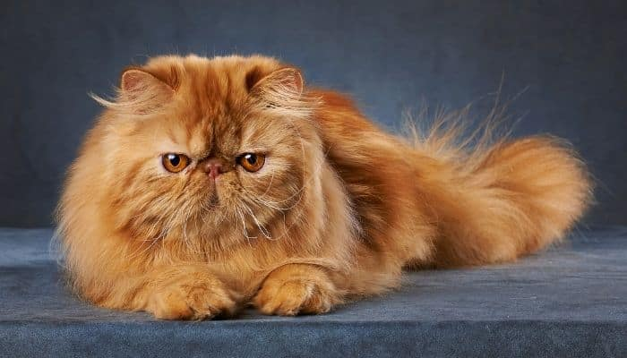

cat
amo o eddie
adoro o eddie
amo gatos

curiosidades sobre gatos
Em média um gato passa 2/3 do dia a dormir. Isso significa que em 9 anos de vida, apenas está acordado 3 anos.
Quando um gato persegue uma presa, ao contrário de um cão ou humano, mantém a cabeça sempre para baixo.
As gatas tendem a ser dextras, enquanto os gatos tendem a ser maioritariamente esquerdinos.
Um gato faz cerca de 100 sons diferentes, enquanto um cão faz cerca de 10.
Existem mais de 500 milhões de gatos domésticos no
mundo, e aproximadamente 40 raças reconhecidas.
Alguns gatos já sobreviveram a quedas de 20 metros, devido ao reflexo de endireitamento.
Os seus olhos, os órgãos e ouvido interno, dizem ao gato onde é que ele está no espaço,
para que ele consiga aterrar em pé. Mesmo os gatos sem cauda possuem esta capacidade.
Os gatos são os animais de estimação mais populares de todo o mundo. Apesar de domesticados, os gatos partilham todas as características dos felinos selvagens dos quais são parentes: são fortes, ágeis, dotados de grandes reflexos, sentidos apurados e instinto de caça, além de possuírem a personalidade vincada e individualista que lhes é característica.
São brincalhões, muito independentes, curiosos e conseguem ser teimosos, mas são
também extremamente amigáveis e afetivos: um dos gestos mais carinhosos dos gatos é a famosa turrinha, que dão entre si e aos seus donos.
utro sinal de afeição é o não menos famoso ronronar.